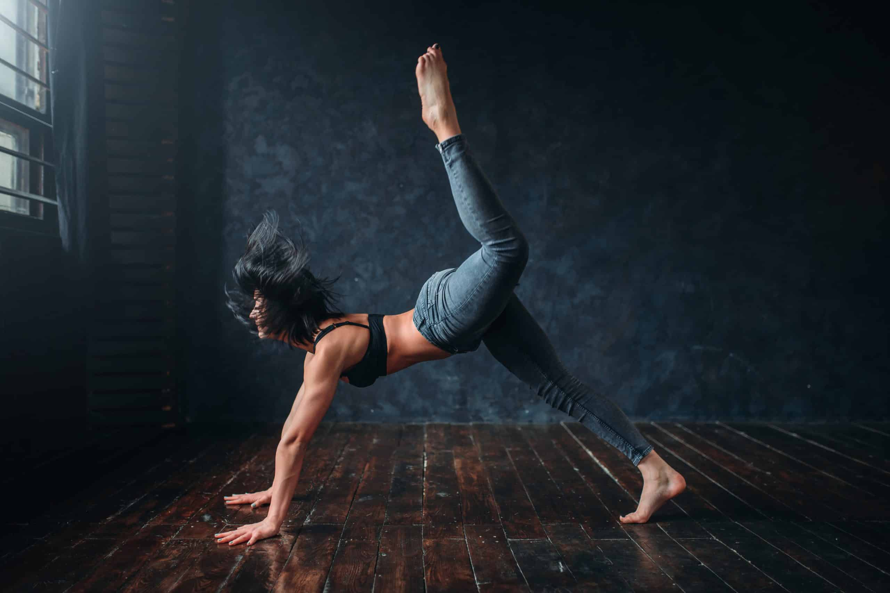

What Is Contemporary Dance?
Start dancing with us

Contemporary dance blends elements of multiple dance styles and lets dancers express
emotionality through movements and breath. Learn about the importance of contemporary
dance as an art form through a brief exploration of its history, influences, and techniques.
Contemporary dance is a style of interpretive dance that embraces innovation,
blending techniques from various genres, including classical ballet, jazz, modern dance,
and lyrical dance. This genre of dance, which focuses more on floor work over leg work and pointe,
isn’t restricted by the rules that govern traditional dance forms. Instead, it relies on improvisation
and versatility and is characterized by freedom of movement and fluidity, letting dancers explore the
mind-body connection and ideally evoking emotion in the audience.
Contemporary dance is sometimes considered a form of storytelling, and dancers may use the
medium to portray characters, replay events, or convey personal stories. Its routines may
also communicate abstract ideas, such as ethical values, acceptance of self, and timely social issues.
Costumes typically reflect the topic or tone of the accompanying music, and dancers often perform with bare feet.
Performers may perform this type of dance to various musical styles, spoken word poems and songs, or silence.